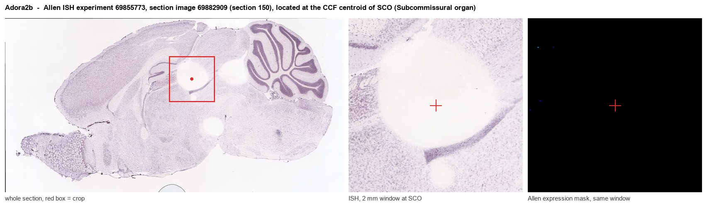
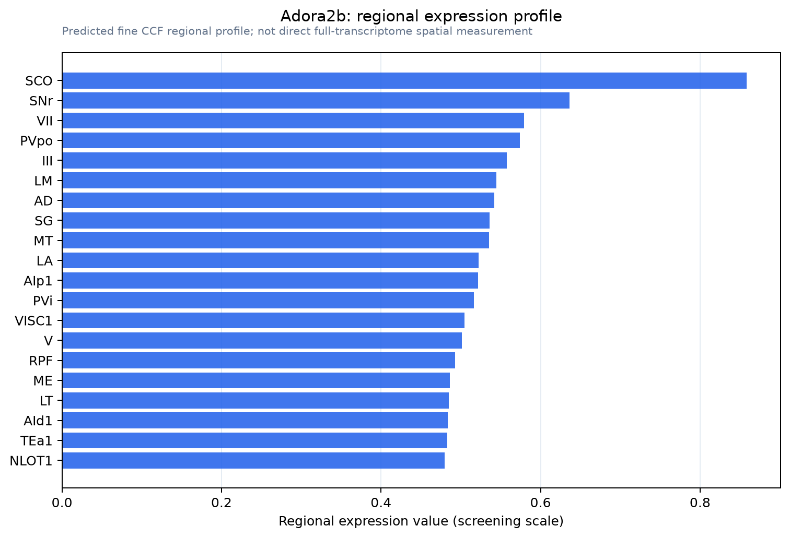

Adora2b
Adenosine receptor A2b
Spatial tier: REGION_BIASED · Class: GPCR · Top region: SCO (Subcommissural organ) · Positive regions: 35/554
43.9Discovery Score
35.9Targetability Score
CEvidence grade C
What this means: Adora2b: fine CCF profile is region-biased toward SCO (top regions: SCO, SNr, VII, PVpo, III); this is a discovery lead, not direct proof.
Function in SCO: evidence, prediction, innovation
- Gene function
- ADORA2B is the low-affinity A2B adenosine receptor, a Gs- (and Gq-) coupled GPCR that raises cAMP only when extracellular adenosine rises well above baseline, as during hypoxia, inflammation or high metabolic demand. It is a classic hypoxia-inducible, HIF-regulated receptor in epithelium, endothelium and immune cells.
- Region function
- The subcommissural organ is an ependymal secretory gland in the roof of the third ventricle at the posterior commissure; it secretes SCO-spondin into cerebrospinal fluid to form Reissner's fibre, which contributes to CSF flow, aqueduct patency and axial/neurodevelopmental signalling.
- Published in this region
- none No region-specific literature found. In brain, ADORA2B has been studied in hippocampus, where Gile 2020 linked hippocampal ADORA2B and PER2 to midazolam-induced cognitive dysfunction, and in oligodendrocyte biology (Cherchi 2026); nothing addresses the subcommissural organ or its secretory ependyma.
- Predicted function
- Prediction: the subcommissural organ is a secretory epithelium bathed in CSF, exactly the setting where A2B receptors normally couple extracellular adenosine to cAMP-driven secretion and barrier function. A2B activation would therefore be expected to stimulate SCO-spondin release and Reissner's fibre formation when CSF adenosine rises (hypoxia, sleep pressure, high metabolic load). Adora2b knockout or the antagonist PSB-603 should reduce SCO secretory output and, over development, could produce aqueduct stenosis/hydrocephalus-like phenotypes; an A2B agonist (BAY 60-6583) should increase secretion.
- Innovation
- ★★★★★ 5/5 Purinergic control of subcommissural organ secretion is entirely unstudied despite an obvious CSF-adenosine sensing role and existing selective drugs.
- Tools
- Adora2b knockout and floxed mice; agonist BAY 60-6583, antagonists PSB-603 and MRS1754; anti-A2B antibodies; SCO/ependymal targeting via FoxJ1-CreER and intracerebroventricular AAV.
- References
Direct evidence located at the region

Allen ISH experiment 69855773, section image 69882909 (section 150): the section that contains the CCF centroid of Subcommissural organ according to the Allen image-to-atlas alignment (reference_to_image), with a 2 mm window around that point. Left: whole section, red box = window. Middle: ISH signal. Right: Allen's expression-mask view of the same window. open this image in the Allen viewer
Look it up yourself: Allen Mouse Brain ISH for Adora2bAllen reference atlas: SCO (structure 599626923)ABC Atlas MERFISH viewer(in the ABC Atlas choose dataset MERFISH-C57BL6J-638850-CCF, colour cells by gene "Adora2b" or by parcellation_substructure "SCO")All genes confined to SCO + 3-D brain
Direct spatial evidence
MERFISH REGION LOCATOR

Regional expression figure

Predicted WMB × fine-CCF profile; not direct full-transcriptome spatial measurement.
Spatial profile
Evidence and specificity
- Evidence status
- PREDICTED_FINE
- Direct sources
- None; predicted localization only
- Exclusive threshold
- 12 positive regions out of 554
- Spatial specificity
- 0.271
- Top-region fraction
- 0.049
- Filter status
- PASS
Interpretation limits
- Cell-type-to-region projection is imputed expression, not direct spatial measurement.
- Adult reference atlases do not establish stability across age, sex, strain, state, or disease.
- Transcript abundance does not guarantee protein abundance or genetic-tool performance.